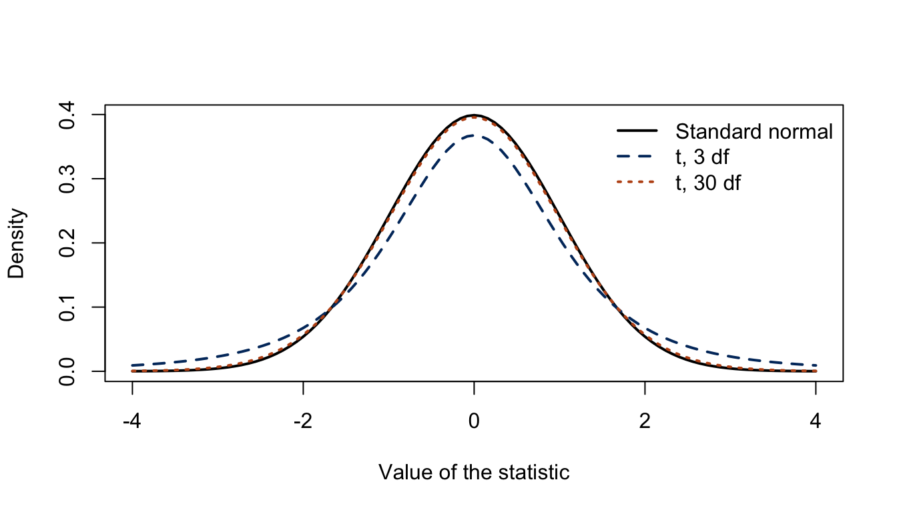
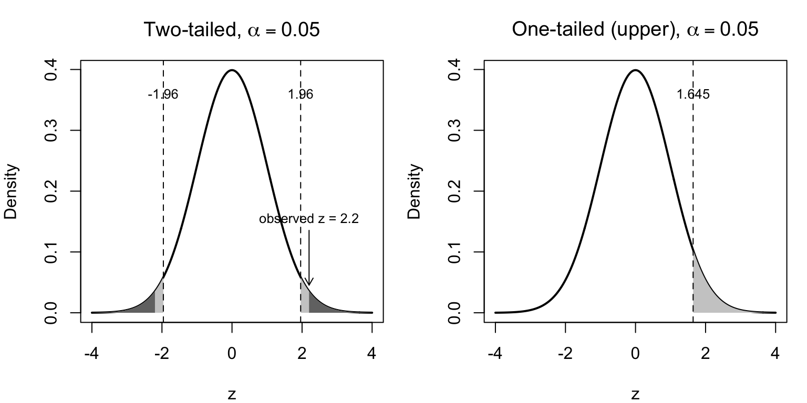

Test Statistics
Abstract
This guide explains what a test statistic is, where it comes from, and how to read one. We frame test statistics within hypothesis testing, show that almost every common statistic is the same idea: a standardized distance between what we observed and what a null hypothesis predicts, and then build the z, t, chi-square, and F statistics from familiar quantities such as means, variances, and standard errors. Along the way we cover one-, two-, and paired-sample tests, degrees of freedom, the significance level, one- versus two-tailed tests, and what to do when a test’s assumptions fail, shown with a permutation test and an honest account of what it does and does not fix. Every method comes with executable R code, and the core t-tests carry parallel Python and Stata snippets.
Keywords
hypothesis testing, test statistic, z-statistic, t-statistic, F-statistic, chi-square statistic, sampling distribution, degrees of freedom, significance level, one-tailed and two-tailed tests, permutation test, parametric and non-parametric tests
1 Introduction
Nearly every quantitative study ends with the same question: is the pattern I see in my data real, or could it plausibly be an accident of which sample I happened to collect? A test statistic is the number that answers it. It compresses an entire dataset into a single value that measures how far the data depart from a specific claim (the null hypothesis) and it does so on a scale whose behavior under that claim is known in advance. That known behavior is what lets us translate the statistic into a p-value and reach a decision.
This guide is about the test statistics themselves: what they are, where they come from, and how to read them. The unifying idea is simpler than the zoo of named tests suggests. Almost every common test statistic is a standardized distance: a signal-to-noise ratio of the form
\[\text{test statistic} = \frac{\text{estimate} - \text{value under the null}}{\text{standard error of the estimate}}.\]
The numerator is the signal: how far our estimate sits from what the null predicts. The denominator is the noise: how much the estimate would wobble from sample to sample by chance alone. A large statistic means the signal dwarfs the noise, which is evidence against the null. The z and t statistics follow this template exactly; the chi-square and F statistics extend the same signal-to-noise idea to squared deviations and to ratios of variances. Once you see the shared idea, the four statistics stop looking like four unrelated formulas and start looking like four members of one family.
Test statistics are not a medical or a social-science tool; they are the common currency of empirical work across disciplines. The same machinery decides whether:
- a new manufacturing process fills bottles closer to their target weight,
- a marketing A/B test’s conversion-rate difference is more than noise,
- exam scores differ between two teaching methods in education research,
- voting preference is independent of region in political science,
- crop yields differ across fertilizers in an agricultural trial, or
- reaction times shift after an intervention in a psychology experiment.
How This Guide Fits With the Others
This guide explains how the statistics are built and how their reference distributions arise. It is deliberately focused, so it hands off to its neighbors at the boundaries:
- For what a p-value actually means (and the many ways it is misread) see the StatLab guide Interpreting Statistical Output (sections “P-values” and “The Frequentist Mental Model”).
- For choosing and running an applied group comparison (ANOVA, Kruskal-Wallis, Mann-Whitney U) with assumption checks and code, see the StatLab Groupwise Comparison guide.
- For how the significance level \(\alpha\) and statistical power determine the sample size you need, see the StatLab Statistical Power guide.
What You Will Learn
- Hypothesis testing in brief (Section 2): the null and alternative, and why a test statistic is standardized evidence against the null.
- A family of test statistics (Section 3): how z, t, chi-square, and F differ, and the crucial point that they test different null hypotheses.
- Building z and t (Section 4): constructing these statistics from \(\bar{x}\), \(\mu_0\), \(\sigma\), and \(s\), with the one-, two-, and paired-sample cases.
- The chi-square and F statistics (Section 5): counts versus expectations, and ratios of variances.
- Significance, degrees of freedom, and \(\alpha\) (Section 6): how to read critical values and choose a threshold honestly.
- Implementation (Section 7): executable R for every test, with Python and Stata parallels for the t-tests, and the regression bridge connecting tests to regression output.
- Interpretation (Section 8): reading a result without overreaching.
- FAQs (Section 9): including what a permutation test can and cannot rescue when normality fails.
2 Hypothesis Testing in Brief
A test statistic only has meaning inside the logic of hypothesis testing, so we start there. The biggest conceptual hurdle is that the reasoning is indirect: we never directly prove the claim we care about. Instead, we set up a deliberately boring claim, ask how surprising our data would be if that claim were true, and reject it only when the data would be too surprising to dismiss.
2.1 The Null and the Alternative
Every test begins with two competing hypotheses.
- The null hypothesis \(H_0\) is the statement of “nothing going on”: no difference, no association, no effect. It is specific enough to make a numerical prediction; for example, \(H_0: \mu = 250\) milliliters, or \(H_0:\) voting preference is independent of region.
- The alternative hypothesis \(H_1\) (or \(H_a\)) is what we entertain if the data make \(H_0\) untenable: \(\mu \neq 250\), or preference and region are associated.
We then compute a test statistic and ask: if \(H_0\) were exactly true, how often would chance alone produce a statistic at least this extreme? That probability is the p-value. A small p-value means the data are hard to reconcile with \(H_0\), so we reject \(H_0\); a large one means the data are consistent with \(H_0\), so we fail to reject it. We never “accept” \(H_0\): absence of evidence is not evidence of absence.
In plain language: a test statistic is the strength of the case against the null, and the p-value is how easily chance could have manufactured a case at least that strong. The reference distribution, the behavior of the statistic when \(H_0\) is true, is the courtroom in which that case is judged.
2.2 The Reference Distribution
A test statistic is useful precisely because we know its sampling distribution under the null: the distribution of values it would take across many hypothetical repetitions of the study if \(H_0\) were true. This reference distribution (standard normal, Student’s \(t\), chi-square, or \(F\), depending on the test) is what converts a raw number into a probability. A statistic of \(z = 2.5\) is meaningful only because we know that, under the null, the standard normal distribution puts little probability beyond \(\pm 2.5\).
This guide’s job is to explain why each statistic follows the reference distribution it does. The companion question—how to read the resulting p-value, confidence interval, and effect size without overreaching—is treated as a reading skill in Interpreting Statistical Output (section “The Frequentist Mental Model”), which we will not duplicate here.
3 A Family of Test Statistics
Before constructing any single statistic, it helps to see the family together, and to confront a point that belongs up front, not buried in an appendix: these statistics test substantively different null hypotheses. Reaching for the wrong one is not a rounding error; it answers a different question.
| Statistic | General form | What it tests (its \(H_0\)) | Typical data | Reference distribution |
|---|---|---|---|---|
| z | \(\dfrac{\bar{x}-\mu_0}{\sigma/\sqrt{n}}\) | A mean (or proportion) equals a stated value, variance known or fixed by \(H_0\) | Continuous or counts, large \(n\) | Standard normal \(N(0,1)\) |
| t | \(\dfrac{\bar{x}-\mu_0}{s/\sqrt{n}}\) | A mean (or difference of means) equals a stated value, variance estimated | Continuous, any \(n\) (normality matters when \(n\) is small) | Student’s \(t\) with \(\nu\) df |
| \(\chi^2\) | \(\displaystyle\sum \frac{(O-E)^2}{E}\) | Categorical variables are independent, or counts match expected frequencies | Counts in categories | Chi-square with \(\nu\) df |
| F | \(\dfrac{s_1^2}{s_2^2}\) or \(\dfrac{\text{MS}_\text{between}}{\text{MS}_\text{within}}\) | Two variances are equal, or several means are all equal (ANOVA) | Continuous, \(\geq 2\) groups | \(F\) with \((\nu_1,\nu_2)\) df |
Notice how different the nulls are. The t statistic asks about a difference in means. The chi-square statistic, in its most common use, asks about independence: whether knowing one categorical variable tells you anything about another. The F statistic asks about ratios of variability, which is why it governs both the equality-of-variances test and the analysis of variance. A t-test and a chi-square test applied to the same study are not interchangeable; they interrogate different features of the data and suit different data types.
They Are Relatives, Not Strangers
The four statistics are mathematically linked, which is reassuring rather than coincidental:
- As its degrees of freedom grow, the t distribution converges to the standard normal: with large samples, \(t \approx z\). The \(t\) is simply the price we pay for estimating the standard deviation instead of knowing it.
- For a comparison of exactly two group means, the squared pooled (equal-variance) two-sample \(t\) equals the ANOVA \(F\): \(t^2 = F\), with identical p-values (we verify this in Section 7). The identity is specific to the pooled statistic; squaring Welch’s \(t\), the everyday default, does not reproduce \(F\).
- The chi-square distribution is the distribution of a sum of squared independent standard normals, and an F statistic is a ratio of two (scaled) chi-squares. The whole family descends from the normal distribution.
Where You Will Actually Meet Them: the Regression Table
Many readers first encounter these statistics not in a named test but in the output of a regression, and the two views are the same thing. (If regression itself is new to you, skim this box now and return to it after the Ordinary Least Square Regression guide.) A one-sample \(t\) is the intercept \(t\) of lm(x ~ 1) (with the null value subtracted from x first). A two-sample pooled \(t\) is the \(t\) on a 0/1 group dummy in lm(y ~ group), which is exactly how a wage gap or a treatment-versus-control effect appears in an economics paper: as the coefficient on a dummy. And a one-way ANOVA’s \(F\) is the regression’s overall (joint-significance) \(F\). We verify all three identities numerically in Section 7. For the regression side of this bridge, see the StatLab guides Ordinary Least Square Regression and Robust Standard Errors.
4 Building the z and t Statistics
We now construct the most important member of the family from scratch, making every constitutive piece visible. We use the one-sample mean because every symbol in it is familiar.
4.1 From a Sample Mean to a z Statistic
Suppose a bottling line is meant to fill each bottle to \(\mu_0 = 250\) milliliters. We draw a sample of \(n\) bottles, measure them, and compute the sample mean \(\bar{x}\). Even if the machine is perfectly calibrated, \(\bar{x}\) will not land exactly on 250: sampling alone makes it wander. The Central Limit Theorem tells us how much. If individual fills have standard deviation \(\sigma\), then across repeated samples the mean \(\bar{x}\) is approximately normal, centered at the true mean, with a standard deviation of its own—the standard error—equal to \(\sigma/\sqrt{n}\).
Standardizing \(\bar{x}\) by subtracting its null-hypothesized center and dividing by its standard error gives the one-sample z statistic:
\[z = \frac{\bar{x} - \mu_0}{\sigma/\sqrt{n}}. \tag{1}\]
Every symbol is something you already know: \(\bar{x}\) is the sample mean, \(\mu_0\) is the value the null asserts, \(\sigma\) is the population standard deviation, and \(n\) is the sample size. The numerator measures how far the sample mean strayed from the null; the denominator says how far it could be expected to stray by chance. Under \(H_0\), this ratio approximately follows the standard normal distribution (exactly so if the individual values are themselves normal), so a value beyond about \(\pm 1.96\) falls in the most extreme 5% and counts as evidence against \(H_0\).
In plain language: \(z\) converts “how many milliliters off target are we?” into “how many standard errors off target are we?”: a scale on which the word “surprising” has a precise, universal meaning.
4.2 When the Variance Is Unknown: the t Statistic
Equation Equation 1 has a practical flaw: it requires \(\sigma\), the population standard deviation, which we almost never know. The natural fix is to estimate it from the sample, replacing \(\sigma\) with the sample standard deviation \(s\). That single substitution turns the z statistic into the one-sample t statistic:
\[t = \frac{\bar{x} - \mu_0}{s/\sqrt{n}}. \tag{2}\]
The formula looks almost identical, but the consequence is real. Because \(s\) is itself an estimate that varies from sample to sample, the ratio now has two sources of randomness—in the numerator and the denominator—rather than one. This extra uncertainty makes the statistic more prone to large values than a standard normal, so it follows a heavier-tailed reference distribution: Student’s \(t\). The \(t\) distribution is indexed by its degrees of freedom, here \(\nu = n - 1\), and as \(\nu\) grows, \(s\) estimates \(\sigma\) ever more reliably and the \(t\) distribution tightens back toward the standard normal. Figure 1 shows exactly what “heavier tails” means.
4.2.1 A Worked One-Sample Example
Consider a quality-control check on that bottling line. We sample \(n = 20\) bottles intended to hold 250 ml and test \(H_0: \mu = 250\) against \(H_1: \mu \neq 250\).
Code
# Measured fill volumes (ml) for 20 sampled bottles
fills <- c(247, 251, 249, 245, 250, 248, 252, 246, 249, 247,
250, 248, 244, 251, 249, 247, 250, 246, 248, 249)
xbar <- mean(fills) # sample mean
s <- sd(fills) # sample standard deviation
n <- length(fills) # sample size
mu0 <- 250 # value under the null
t_stat <- (xbar - mu0) / (s / sqrt(n)) # the t statistic, by hand
c(mean = xbar, sd = round(s, 3), n = n, t = round(t_stat, 3), df = n - 1) mean sd n t df
248.300 2.105 20.000 -3.611 19.000 The sample mean is 248.3 ml (about 1.7 ml below target) and the standard error is \(s/\sqrt{n} =\) 0.471 ml. Dividing the shortfall by that standard error yields \(t =\) -3.611 on \(n - 1 = 19\) degrees of freedom. Reassuringly, R’s built-in t.test() reproduces the by-hand number exactly:
Code
ttest_one <- t.test(fills, mu = 250)
ttest_one
One Sample t-test
data: fills
t = -3.6115, df = 19, p-value = 0.001859
alternative hypothesis: true mean is not equal to 250
95 percent confidence interval:
247.3148 249.2852
sample estimates:
mean of x
248.3 The statistic of -3.611 corresponds to \(p =\) 0.00186, well below the conventional 0.05 threshold, so we reject \(H_0\): the evidence indicates the line is under-filling. The test also returns a 95% confidence interval (247.3 to 249.3 ml) that excludes 250; the confidence interval and the test always tell the same story, a point developed in Interpreting Statistical Output.
4.3 Two Samples and Paired Samples
We must be explicit about the three sampling structures, because the same substantive question (“do these groups differ?”) demands different statistics depending on how the data were collected.
- One-sample test (above): compare one group’s mean to a fixed reference value \(\mu_0\).
- Two-sample (independent) test: compare the means of two separate groups: automatic versus manual cars, treatment versus control, plan A versus plan B subscribers. The statistic generalizes to \(t = (\bar{x}_1 - \bar{x}_2)/\text{SE}(\bar{x}_1 - \bar{x}_2)\), where the standard error now combines the variability of both groups. R defaults to Welch’s version, which does not assume the two groups share a variance and is the safer everyday choice.
- Paired test: compare two measurements taken on the same units: before and after an intervention, left versus right, or two treatments given to the same subjects. The right move is to reduce each pair to its difference and run a one-sample test on those differences against \(\mu_0 = 0\), on \(\nu = (\text{number of pairs}) - 1\) degrees of freedom. Pairing removes between-subject variation and is usually far more powerful than treating the two columns as independent.
One assumption underlies all three structures and is worth naming because it is the most frequently violated in practice: the observations must be independent of one another. Repeated measurements on the same person, students clustered in classrooms, or several observations per firm all break it, and no amount of sample size repairs the damage; clustered and repeated-measures data call for paired or mixed-model methods rather than a plain two-sample test. The StatLab Groupwise Comparison guide covers those designs.
A Common R Trap: Paired Tests and the Formula Interface
It is tempting to write a paired test as t.test(outcome ~ group, paired = TRUE), but R rejects this: the formula interface does not accept paired = TRUE (it errors with “cannot use ‘paired’ in formula method”). Supply the two measurement vectors directly instead, t.test(before, after, paired = TRUE), so that R can line up each pair. We use this correct form in Section 7.
5 The Chi-Square and F Statistics
The z and t statistics standardize a mean. Two other workhorses standardize different quantities (counts and variances) and so answer different questions.
5.1 The Chi-Square Statistic: Observed versus Expected Counts
When the data are counts in categories rather than measurements, “distance from the null” is measured between the frequencies we observed and the frequencies we would expect if the null were true. Pearson’s chi-square statistic accumulates that distance across every cell of a table:
\[\chi^2 = \sum \frac{(O - E)^2}{E}, \tag{3}\]
where \(O\) is an observed count and \(E\) is the count expected under the null. Each term is a squared discrepancy, rescaled by how large a discrepancy we should expect in that cell; squaring keeps surpluses and shortfalls from cancelling. Its most common use is the test of independence: in a two-way table, the null states that the row variable and the column variable are unrelated, and \(E\) is computed from the row and column totals as if that were so. When the expected counts are large, each \((O-E)/\sqrt{E}\) behaves approximately like a standard normal; and because the counts must reproduce the fixed row and column totals, only \((\text{rows}-1)(\text{columns}-1)\) of these deviations are free to vary. The sum is therefore approximately chi-square with \(\nu = (\text{rows}-1)(\text{columns}-1)\) degrees of freedom, an approximation that improves with sample size; the practical rule of thumb this implies appears just below.
In plain language: the chi-square statistic asks, “are the cells of my table close to what independence would predict?” A large value means at least one cell is far from its expectation, so the variables are associated.
Because the reference distribution is only an approximation, small tables need care. The usual rule of thumb asks that all expected counts be at least 5 (or that at least 80% of cells meet it, with none below 1). R’s chisq.test() applies Yates’ continuity correction automatically, but only to 2$$2 tables, and warns when expected counts are small. When a table is genuinely sparse, the remedy is Fisher’s exact test (fisher.test()), which computes the p-value exactly instead of leaning on the approximation.
5.2 The F Statistic: a Ratio of Variances
The final workhorse compares variability rather than location. The F statistic is a ratio of two variance estimates:
\[F = \frac{s_1^2}{s_2^2} \qquad\text{or, in ANOVA,}\qquad F = \frac{\text{MS}_\text{between}}{\text{MS}_\text{within}}. \tag{4}\]
In its simplest form it tests whether two populations share a variance (\(H_0: \sigma_1^2 = \sigma_2^2\)), so the null predicts \(F \approx 1\). Its more famous role is in the analysis of variance (ANOVA), where the numerator measures how much group means spread apart (“between-group” variance) and the denominator measures the leftover noise within groups. If several group means are truly equal, between-group spread should be no larger than within-group noise and \(F \approx 1\); if the means differ, the numerator inflates and \(F\) grows. Its reference distribution, the \(F\) family, carries two degrees-of-freedom parameters, one for each variance estimate.
The F statistic is where this guide hands off to the Groupwise Comparison guide: we construct the statistic and explain its distribution here, but for the full applied ANOVA workflow (assumption checks, post-hoc Tukey or Dunn comparisons, and effect sizes) see that guide.
6 Significance, Degrees of Freedom, and Choosing α
A test statistic becomes a decision only after we compare it to its reference distribution. Three ideas govern that final step.
6.1 Degrees of Freedom
Degrees of freedom (df) count the number of independent pieces of information left to estimate variability after we have spent some of the data estimating other quantities. In the one-sample \(t\) test we estimate the mean before estimating the spread, which uses up one piece of information and leaves \(\nu = n-1\). The same bookkeeping explains \((\text{rows}-1)(\text{columns}-1)\) for a contingency table and the pair of df parameters \((\nu_1, \nu_2)\) carried by the \(F\). Degrees of freedom matter because they set the shape of the reference distribution: with few of them, the \(t\) and chi-square distributions have heavier tails, so a larger statistic is needed to reach significance.
6.2 Critical Values versus p-values
There are two equivalent ways to render a verdict. The critical-value approach fixes a threshold on the statistic’s own scale—for a two-sided \(z\) test at the 5% level, the critical values are \(\pm 1.96\)—and rejects \(H_0\) when the statistic falls beyond it. The p-value approach instead converts the statistic into a probability and rejects when \(p < \alpha\). They always agree, because the critical value is simply the statistic value whose tail probability equals \(\alpha\). Modern software reports the p-value, but the critical-value picture is what makes “one-tailed versus two-tailed” intuitive.
6.3 One- versus Two-Tailed Tests
The alternative decides how the rejection region is spread across the reference distribution.
- A two-tailed test (\(H_1: \mu \neq \mu_0\)) splits the rejection region between both tails (2.5% in each at \(\alpha = 0.05\)) because a surprising departure in either direction counts. This is the default and the honest choice when you are not certain of the direction in advance.
- A one-tailed test (\(H_1: \mu > \mu_0\) or \(\mu < \mu_0\)) places the entire 5% in a single tail, making it easier to reach significance in that direction at the cost of no power to detect an effect the other way. A one-tailed test is defensible only when an effect in the opposite direction would be of no interest and the direction was specified before seeing the data, ideally in a pre-registration or pre-analysis plan; in confirmatory settings such as trials, two-sided tests are the expected norm.
Figure 2 puts the whole decision on one picture: the reference distribution, the critical values on the statistic’s own scale, the rejection region they bound, and an observed statistic with its p-value as the tail area beyond it.

6.4 Choosing the Significance Level α
The significance level \(\alpha\) is the probability of a false alarm (rejecting a true null) that we are willing to tolerate, and it is the threshold the test uses. The familiar \(\alpha = 0.05\) is a convention, not a law of nature, and treating it as a bright line dividing truth from falsehood is a well-documented mistake.
α = 0.05 Is a Choice, Not a Discovery
The threshold should follow from the costs of the two kinds of error in your setting, not from habit. Where a false positive is expensive (approving a drug, deploying a costly policy) a stricter \(\alpha\) (0.01 or smaller) is warranted; in exploratory work a looser one may be reasonable, provided it is declared in advance. Two cautions:
- Comparing the power of different test statistics is itself subtle at small significance levels, as Morris and Elston (2011) show in The American Statistician: the most powerful test at \(\alpha = 0.05\) need not be the most powerful at \(\alpha = 0.001\).
- “Marginally significant” and “trending toward significance” describe results on the wrong side of a threshold you chose; the phrases should be retired. The broader critique of \(\alpha\)-worship, and the ASA’s guidance, are laid out in Wasserstein and Lazar (2016) and in Interpreting Statistical Output.
How \(\alpha\) trades off against power and sample size—and how to choose all three at the design stage—is the subject of the StatLab Statistical Power guide.
7 Implementation
This section runs each statistic on concrete data, real or simulated: show, don’t tell. The R code is executed live; parallel Python (scipy.stats) and Stata snippets are shown so you can reproduce the analysis in your software of choice. The R output is the authoritative version here.
7.1 One-Sample t-Test
We reuse the bottling example: is the mean fill different from 250 ml?
Code
fills <- c(247, 251, 249, 245, 250, 248, 252, 246, 249, 247,
250, 248, 244, 251, 249, 247, 250, 246, 248, 249)
t.test(fills, mu = 250)
One Sample t-test
data: fills
t = -3.6115, df = 19, p-value = 0.001859
alternative hypothesis: true mean is not equal to 250
95 percent confidence interval:
247.3148 249.2852
sample estimates:
mean of x
248.3 import numpy as np
from scipy import stats
fills = np.array([247, 251, 249, 245, 250, 248, 252, 246, 249, 247,
250, 248, 244, 251, 249, 247, 250, 246, 248, 249])
t_stat, p_val = stats.ttest_1samp(fills, popmean=250)
print(f"t = {t_stat:.3f}, p = {p_val:.4f}")clear
input fill
247
251
249
245
250
248
252
246
249
247
250
248
244
251
249
247
250
246
248
249
end
ttest fill == 2507.2 Two-Sample (Independent) t-Test
Do cars with automatic and manual transmissions differ in fuel economy? We use the built-in mtcars data (am: 0 = automatic, 1 = manual).
Code
two_sample <- t.test(mpg ~ am, data = mtcars) # Welch's test by default
two_sample
Welch Two Sample t-test
data: mpg by am
t = -3.7671, df = 18.332, p-value = 0.001374
alternative hypothesis: true difference in means between group 0 and group 1 is not equal to 0
95 percent confidence interval:
-11.280194 -3.209684
sample estimates:
mean in group 0 mean in group 1
17.14737 24.39231 import statsmodels.api as sm
from scipy import stats
mtcars = sm.datasets.get_rdataset("mtcars").data
auto = mtcars.loc[mtcars.am == 0, "mpg"]
manual = mtcars.loc[mtcars.am == 1, "mpg"]
t_stat, p_val = stats.ttest_ind(auto, manual, equal_var=False) # Welch
print(f"t = {t_stat:.3f}, p = {p_val:.4f}")sysuse auto, clear
ttest mpg, by(foreign) // illustrative two-group mean comparisonManual cars average 24.4 mpg against 17.1 for automatics, a gap of about 7.2 mpg, with \(t =\) -3.77 and \(p =\) 0.0014: strong evidence the means differ.
7.3 Paired t-Test
The sleep data record the extra hours of sleep for the same ten subjects under two soporific drugs: a paired design. Following the trap flagged in Section 4, we pass the two vectors directly.
Code
with(sleep, t.test(extra[group == 1], extra[group == 2], paired = TRUE))
Paired t-test
data: extra[group == 1] and extra[group == 2]
t = -4.0621, df = 9, p-value = 0.002833
alternative hypothesis: true mean difference is not equal to 0
95 percent confidence interval:
-2.4598858 -0.7001142
sample estimates:
mean difference
-1.58 The mean within-subject difference is -1.58 hours; because the same people received both drugs, pairing strips away person-to-person sleep differences and sharpens the comparison.
7.4 Chi-Square Test of Independence
Is voting preference independent of region? We cross-tabulate a (hypothetical) survey of two parties across three regions.
Code
votes <- matrix(c(40, 30, 30,
20, 35, 45),
nrow = 2, byrow = TRUE,
dimnames = list(Party = c("A", "B"),
Region = c("North", "Center", "South")))
votes Region
Party North Center South
A 40 30 30
B 20 35 45Code
chisq.test(votes)
Pearson's Chi-squared test
data: votes
X-squared = 10.051, df = 2, p-value = 0.006567With \(\chi^2 =\) 10.05 on 2 df and \(p =\) 0.0066, we reject independence: party preference and region are associated.
7.5 F-Test and One-Way ANOVA
The F statistic appears in two guises. First, a direct test of equal variances between two groups:
Code
var.test(mpg ~ am, data = mtcars) # H0: the two variances are equal
F test to compare two variances
data: mpg by am
F = 0.38656, num df = 18, denom df = 12, p-value = 0.06691
alternative hypothesis: true ratio of variances is not equal to 1
95 percent confidence interval:
0.1243721 1.0703429
sample estimates:
ratio of variances
0.3865615 One caveat belongs beside this test: the variance-ratio \(F\) test is highly sensitive to non-normality, so a significant result may reflect heavy tails rather than genuinely unequal variances. If you need to test variances, the more robust choice is Levene’s or the Brown-Forsythe test (car::leveneTest()). And if the variance question only arose as a screen before a \(t\)-test, the better practice is to skip the pre-test entirely and use Welch’s \(t\), this guide’s default, which never assumes equal variances in the first place.
Second, ANOVA, where F compares several group means at once. The chickwts data record the weights of chicks raised on six feed types—an agricultural example.
Code
anova_fit <- aov(weight ~ feed, data = chickwts)
summary(anova_fit) Df Sum Sq Mean Sq F value Pr(>F)
feed 5 231129 46226 15.37 5.94e-10 ***
Residuals 65 195556 3009
---
Signif. codes: 0 '***' 0.001 '**' 0.01 '*' 0.05 '.' 0.1 ' ' 1The large \(F\) (15.4, \(p =\) 5.9^{-10}) says the feeds do not produce equal mean weights. To see which feeds differ, and to check the ANOVA assumptions, continue with the StatLab Groupwise Comparison guide.
7.6 A Family Identity: \(t^2 = F\)
The claim from Section 3, that a two-group ANOVA’s \(F\) equals the squared pooled (equal-variance) two-sample \(t\), is easy to confirm:
Code
t_eq <- t.test(mpg ~ am, data = mtcars, var.equal = TRUE)$statistic
f_eq <- summary(aov(mpg ~ factor(am), data = mtcars))[[1]][["F value"]][1]
c(t_squared = round(t_eq^2, 3), F = round(f_eq, 3))t_squared.t F
16.86 16.86 The two numbers agree, confirming that the \(t\) and \(F\) tests are two views of the same comparison when there are exactly two groups.
7.7 The Regression Bridge
The callout in Section 3 promised that each of these statistics is also something you can read off a regression table. All three identities are one line each to confirm:
Code
# One-sample t on the bottling data = intercept t of an intercept-only regression
# (subtract the null value first, so the intercept tests 0)
c(t_test = t.test(fills, mu = 250)$statistic,
lm = summary(lm(I(fills - 250) ~ 1))$coefficients[1, 3]) t_test.t lm
-3.611476 -3.611476 Code
# Pooled two-sample t = the t on the 0/1 transmission dummy (signs may flip
# with group coding; the magnitude and p-value are identical)
c(t_test = t.test(mpg ~ am, data = mtcars, var.equal = TRUE)$statistic,
lm = summary(lm(mpg ~ am, data = mtcars))$coefficients[2, 3]) t_test.t lm
-4.106127 4.106127 Code
# One-way ANOVA F = the regression's overall (joint-significance) F
c(aov = summary(aov(weight ~ feed, data = chickwts))[[1]][["F value"]][1],
lm = summary(lm(weight ~ feed, data = chickwts))$fstatistic[1]) aov lm.value
15.3648 15.3648 The two-sample line is the treatment-versus-control regression promised in Section 3, with the two-sample \(t\) appearing as the \(t\) on the treatment dummy. The bridge extends one step further: Welch’s \(t\) equals the heteroskedasticity-robust (HC2) \(t\) of that same dummy regression, here both 3.7671, which makes Welch’s test a first, free introduction to the robust standard errors covered in the StatLab Robust Standard Errors guide.
Code
m <- lm(mpg ~ am, data = mtcars)
se_hc2 <- sqrt(diag(sandwich::vcovHC(m, type = "HC2")))["am"]
c(welch_t = abs(t.test(mpg ~ am, data = mtcars)$statistic),
hc2_t = abs(coef(m)["am"] / se_hc2))welch_t.t hc2_t.am
3.767123 3.767123 To see the machinery in its native economic habitat, here is the same comparison with wages. Suppose 150 workers completed a job-training program and 150 comparable workers did not, and we ask whether hourly wages differ. The data are simulated, with the right skew real wages show:
Code
set.seed(1)
# Hourly wages: 150 workers per arm, log-normal like real wage distributions
wage <- c(rlnorm(150, log(22.0), 0.4), # control
rlnorm(150, log(24.5), 0.4)) # completed the program
program <- rep(c(0, 1), each = 150) # the treatment dummy
c(t_test = abs(t.test(wage ~ program, var.equal = TRUE)$statistic),
lm = abs(summary(lm(wage ~ program))$coefficients["program", 3]))t_test.t lm
2.864031 2.864031 The two numbers are again identical, but the regression’s coefficient carries something the bare \(t\) does not: the estimated program effect in interpretable units, $3.40 per hour (trained workers average $27.1 against $23.7). That is why economists report regression tables rather than \(t\)-tests: the inference is the same, and the estimate arrives in dollars.
8 Interpretation
Reading a test result well means attending to four things, in this order:
- The statistic and its degrees of freedom locate the result on the correct reference distribution; report them (e.g., \(t(18.3) = -3.77\) or \(\chi^2(2) = 10.05\)).
- The direction (sign) tells you which way the effect points; a negative one-sample \(t\) means the sample mean fell below the null value.
- The p-value says how compatible the data are with the null, given the reference distribution. It is not the probability that the null is true, and a smaller p does not mean a larger or more important effect.
- The confidence interval and effect size carry the magnitude that the p-value omits. Significant is not important. Our bottling example makes the distinction concrete: the under-filling is statistically unambiguous (\(p < 0.01\)), but what the machine is actually doing is delivering about 1.7 ml short on a 250 ml target, less than one percent. Whether that is worth stopping a production line over is an engineering and business judgment the p-value cannot make. A statistically significant result on a trivial effect, and a non-significant result from an underpowered study, are both common and both easy to misread.
That fourth point is where this guide stops and Interpreting Statistical Output takes over: for what the p-value does and does not mean, the catalogue of misinterpretations, confidence-interval logic, and effect sizes, see its sections “P-values,” “Confidence Intervals,” and “Effect Sizes.” A test statistic obtained after data-dependent analysis choices is also not trustworthy at face value; for p-hacking and multiple comparisons, see that guide’s “Sources of Distortion.”
9 FAQs
9.0.1 When should I use a t-test instead of a z-test?
Use a t-test whenever the population standard deviation \(\sigma\) is unknown and must be estimated from the sample, which is almost always. The z-test assumes \(\sigma\) is known; it is appropriate mainly for proportions, where the variance is not externally known but fixed by the null at \(p_0(1-p_0)/n\), making the statistic a large-sample normal approximation rather than exactly \(N(0,1)\), or for very large samples, in which case \(t \approx z\) anyway. In R, prop.test(x, n, p = p0, correct = FALSE) runs the chi-square equivalent of the proportion \(z\)-test (its X-squared equals \(z^2\); the default correct = TRUE adds a continuity correction, so results will not match a hand-computed \(z\) exactly), and binom.test(x, n, p0) gives the exact small-sample version. When in doubt, the \(t\)-test is the safe default.
9.0.2 What is the difference between an F-test and a t-test?
A t-test compares two means; an F-test compares variances, or (through ANOVA) three or more means at once. They are relatives, not rivals: for exactly two groups the pooled (equal-variance) \(t\) satisfies \(F = t^2\) with matching p-values (see Section 7); Welch’s \(t\) does not square to \(F\). Reach for \(F\)/ANOVA when you have several groups, so you avoid running many pairwise \(t\)-tests and inflating your false-positive rate.
9.0.3 Why do we use chi-square tests for categorical data?
Because categorical outcomes are counts, not measurements, “distance from the null” is naturally measured between observed and expected frequencies, which is exactly what Equation 3 accumulates. A single binary variable is the boundary case: its proportion is a mean, and the proportion \(z\)-test of the first FAQ applies. With more categories, or two variables in a table, there is no single mean to standardize, and the chi-square statistic is the tool built for that job.
9.0.4 One-tailed or two-tailed: how do I choose?
Default to two-tailed. Use a one-tailed test only when an effect in the opposite direction would be scientifically irrelevant and you committed to the direction before seeing the data; a pre-registration is what makes that commitment verifiable, and confirmatory work such as a clinical trial is expected to stay two-sided. Switching to one-tailed after a two-tailed result disappoints is a form of p-hacking.
9.0.5 What if my data are far from normal? The permutation test
This is the right worry, and it has a clean answer, though a narrower one than is often advertised. The \(t\)-test’s reference distribution is derived from a normality assumption; with small samples, heavy skew, or obvious outliers you may not trust it. A permutation test sidesteps the distributional formula by building the reference distribution from your own data.
The logic is elegant, and it is worth stating precisely because the fine print matters. If the null is true and the two groups are exchangeable, meaning that under \(H_0\) the observations come from one common distribution so the group labels carry no information at all, then we may shuffle the labels thousands of times, recompute the difference in means each time, and see where our observed difference falls in that shuffled distribution. If differences like ours are rare under reshuffling, the observed one is surprising (a small p-value), and normality was never invoked (Yao 2020; Ernst 2004).
Code
set.seed(1)
# Observed difference in mean mpg between manual and automatic cars
obs <- with(mtcars, mean(mpg[am == 1]) - mean(mpg[am == 0]))
# Build the null distribution by shuffling the transmission labels 9,999 times
B <- 9999
perm_diffs <- replicate(B, {
shuffled <- sample(mtcars$am)
mean(mtcars$mpg[shuffled == 1]) - mean(mtcars$mpg[shuffled == 0])
})
# Two-sided permutation p-value. Adding 1 to numerator and denominator counts the
# observed arrangement itself, which keeps the p-value valid and never exactly zero.
perm_p <- (1 + sum(abs(perm_diffs) >= abs(obs))) / (B + 1)
c(observed_diff = round(obs, 2), permutation_p = round(perm_p, 4))observed_diff permutation_p
7.2400 0.0004 Two things about this output deserve attention.
First, look at which \(t\)-test the permutation p-value (4^{-4}) agrees with. It sits beside the pooled equal-variance \(t\)-test’s \(p =\) 2.9^{-4}, not the Welch \(t\)’s \(p =\) 0.0014 reported in Section 7. That is no accident: shuffling raw labels treats the two groups as fully exchangeable, which presumes they share one distribution under the null, equal variances included. A permutation test on the raw mean difference is the pooled \(t\)’s nonparametric cousin, and it inherits the pooled \(t\)’s behavior.
Second, and consequently, this permutation test is a remedy for non-normality, not for unequal variances. When the groups’ variances and sizes differ, exchangeability fails even if the means are equal (the Behrens-Fisher problem), and a raw-difference permutation test then rejects true nulls far more often than its nominal rate. Rather than assert that, we can measure it. The simulation below draws both groups from normal distributions with the same mean, so every rejection is a false positive, but gives the small group a standard deviation three times the large group’s:
Code
set.seed(2)
# Equal means, unequal variances and sizes: the Behrens-Fisher regime.
# Group 1: n = 10, sd = 3; group 2: n = 40, sd = 1. Every rejection is a false positive.
n_rep <- 2000; B <- 499
reject <- replicate(n_rep, {
x <- rnorm(10, mean = 0, sd = 3)
y <- rnorm(40, mean = 0, sd = 1)
obs <- mean(x) - mean(y)
z <- c(x, y); g <- rep(1:2, c(10, 40))
perms <- replicate(B, { s <- sample(g); mean(z[s == 1]) - mean(z[s == 2]) })
c(perm = (1 + sum(abs(perms) >= abs(obs))) / (B + 1) < 0.05,
welch = t.test(x, y)$p.value < 0.05)
})
typeI <- rowMeans(reject)
round(typeI, 3) perm welch
0.251 0.054 At a nominal 5% level, the raw-difference permutation test rejected the true null in 25% of 2,000 simulated studies, while Welch’s \(t\) held close to its advertised rate at 5%. If unequal variances are the concern, use Welch’s \(t\), the default in Section 7, or permute a studentized Welch-type statistic rather than the raw difference.
9.0.6 When should I use a parametric versus a non-parametric test?
Parametric tests (z, t, F) assume a specific distributional form and, when that assumption holds, are the most powerful choice. Non-parametric tests make weaker assumptions and earn their keep when those forms are doubtful:
- Permutation/randomization tests (above) assume only exchangeability under the null and are exact in principle (Good 2005).
- Rank-based tests (the Mann-Whitney U (Wilcoxon rank-sum) for two groups and Kruskal-Wallis for several) replace the data with their ranks, trading a little power for robustness to outliers and skew.
As a rule of thumb: prefer the parametric test when its assumptions are credible and the sample is not tiny; switch to a permutation or rank-based test when the data are heavily skewed, contain outliers, or are too small to trust the Central Limit Theorem. For the applied rank-based workflows (Mann-Whitney U, Kruskal-Wallis) with code and assumption checks, see the StatLab Groupwise Comparison guide.
10 References and Further Reading
10.1 Recommended Resources by Topic
10.1.1 Foundations of Hypothesis Testing and Test Statistics
- Rice (2007), Mathematical Statistics and Data Analysis, a lucid, example-driven derivation of sampling distributions, the \(t\), chi-square, and \(F\), and their relationships. Best starting point for the theory behind the formulas.
- Casella and Berger (2002), Statistical Inference, the standard graduate reference for the construction and optimality of test statistics. Best for a rigorous, complete treatment.
- Wasserman (2004), All of Statistics, a fast, modern tour that connects testing to estimation and the bootstrap. Best concise overview.
- Moore, McCabe, and Craig (2017), Introduction to the Practice of Statistics, an applied, accessible account of one-, two-, and paired-sample \(t\) procedures and ANOVA. Best for applied intuition and worked examples.
10.1.2 Categorical Data
- Agresti (2013), Categorical Data Analysis, the authoritative reference for the chi-square statistic, tests of independence, and beyond. Best for count and contingency-table methods.
10.1.3 Permutation and Non-Parametric Inference
- Ernst (2004), “Permutation Methods: A Basis for Exact Inference”, a clear, short journal introduction to why permutation tests work. Best concise primer.
- Good (2005), Permutation, Parametric, and Bootstrap Tests of Hypotheses, a comprehensive practical treatment. Best reference for applied permutation testing.
- Yao (2020), “Understanding Permutation Testing”, an accessible, intuition-first online tutorial. Best quick, free introduction.
10.1.4 On the Significance Threshold
- Wasserstein and Lazar (2016), “The ASA Statement on p-Values”, the American Statistical Association’s official guidance on what p-values can and cannot do. Essential reading on interpretation and the limits of \(\alpha\).
- Morris and Elston (2011), “A Note on Comparing the Power of Test Statistics at Low Significance Levels”, a caution that the relative power of tests can change with \(\alpha\). Best on the subtleties of choosing a threshold.
10.2 Full Reference List
Agresti, Alan. 2013. Categorical Data Analysis. 3rd ed. Wiley Series in Probability and Statistics. Hoboken, NJ: John Wiley & Sons.
Casella, George, and Roger L. Berger. 2002. Statistical Inference. 2nd ed. Pacific Grove, CA: Duxbury Press.
Ernst, Michael D. 2004. “Permutation Methods: A Basis for Exact Inference.” Statistical Science 19 (4): 676–85. https://doi.org/10.1214/088342304000000396.
Good, Phillip I. 2005. Permutation, Parametric, and Bootstrap Tests of Hypotheses. 3rd ed. Springer Series in Statistics. New York: Springer. https://doi.org/10.1007/b138696.
Moore, David S., George P. McCabe, and Bruce A. Craig. 2017. Introduction to the Practice of Statistics. 9th ed. New York: W. H. Freeman.
Morris, Nathan, and Robert Elston. 2011. “A Note on Comparing the Power of Test Statistics at Low Significance Levels.” The American Statistician 65 (3): 164–66. https://doi.org/10.1198/tast.2011.10117.
Rice, John A. 2007. Mathematical Statistics and Data Analysis. 3rd ed. Belmont, CA: Thomson Brooks/Cole.
Wasserman, Larry. 2004. All of Statistics: A Concise Course in Statistical Inference. Springer Texts in Statistics. New York: Springer. https://doi.org/10.1007/978-0-387-21736-9.
Wasserstein, Ronald L., and Nicole A. Lazar. 2016. “The ASA Statement on p-Values: Context, Process, and Purpose.” The American Statistician 70 (2): 129–33. https://doi.org/10.1080/00031305.2016.1154108.
Yao, Douglas. 2020. “Understanding Permutation Testing.” September 25, 2020. https://douglasyao.github.io/blogs/2020/09/25/intuition-behind-permutation-testing.html.
11 Appendix: Quick Reference
11.1 Choosing a Test Statistic
| If your question is… | and your data are… | use the… | in R |
|---|---|---|---|
| Does one mean equal a target? | one continuous sample | one-sample \(t\) | t.test(x, mu = m0) |
| Do two independent groups’ means differ? | continuous, two groups | two-sample (Welch) \(t\) | t.test(y ~ g) |
| Do paired measurements differ? | continuous, matched pairs | paired \(t\) | t.test(a, b, paired = TRUE) |
| Are two categorical variables associated? | counts in a table | \(\chi^2\) of independence | chisq.test(table) |
| The same, but expected counts are small? | sparse table | Fisher’s exact test | fisher.test(table) |
| Does a proportion equal a stated value? | successes out of \(n\) | large-sample proportion test (or exact binomial) | prop.test(x, n, p = p0); binom.test(x, n, p0) |
| Are two variances equal? | continuous, two groups | \(F\) | var.test(y ~ g) |
| Do three or more means differ? | continuous, \(\geq 3\) groups | \(F\) (ANOVA) | aov(y ~ g) |
| Any of the above, assumptions doubtful? | small / skewed / outliers | permutation or rank test | wilcox.test(); permutation |
11.2 Essential R Functions
Code
t.test(x, mu = 0) # one-sample t
t.test(y ~ group) # two-sample (Welch) t
t.test(before, after, paired = TRUE) # paired t (use vectors, not a formula)
chisq.test(table_of_counts) # chi-square test of independence
fisher.test(table_of_counts) # Fisher's exact test (sparse tables)
prop.test(x, n, p = p0) # one/two-sample proportion test
binom.test(x, n, p0) # exact binomial test
var.test(y ~ group) # F test for equal variances
summary(aov(y ~ group)) # one-way ANOVA (F test)
wilcox.test(y ~ group) # Mann-Whitney U (non-parametric)
kruskal.test(y ~ group) # Kruskal-Wallis (non-parametric ANOVA)11.3 The Family at a Glance
| Distribution | Arises as | Degrees of freedom | Governs |
|---|---|---|---|
| Standard normal \(N(0,1)\) | standardized mean, variance known | — | \(z\) tests |
| Student’s \(t\) | standardized mean, variance estimated | \(n-1\) (one-sample) | \(t\) tests |
| Chi-square \(\chi^2\) | sum of squared standard normals | \((r-1)(c-1)\) for a two-way table; \(n-1\) for a sample variance | tables of counts; the building block of \(F\) |
| \(F\) | ratio of two scaled chi-squares | \((\nu_1, \nu_2)\) | variance ratios, ANOVA |
Citation
BibTeX citation:
@online{gangopadhyay2026,
author = {Gangopadhyay, Prabaha and Demiray, MD, MSc, Atalay},
publisher = {Yale Library StatLab},
title = {Test {Statistics}},
date = {2026-08-17},
langid = {en},
abstract = {This guide explains what a test statistic is, where it
comes from, and how to read one. We frame test statistics within
hypothesis testing, show that almost every common statistic is the
same idea: a standardized distance between what we observed and what
a null hypothesis predicts, and then build the z, t, chi-square, and
F statistics from familiar quantities such as means, variances, and
standard errors. Along the way we cover one-, two-, and
paired-sample tests, degrees of freedom, the significance level,
one- versus two-tailed tests, and what to do when a test’s
assumptions fail, shown with a permutation test and an honest
account of what it does and does not fix. Every method comes with
executable R code, and the core t-tests carry parallel Python and
Stata snippets.}
}
For attribution, please cite this work as:
Gangopadhyay, Prabaha, and Atalay Demiray, MD, MSc. 2026. “Test
Statistics.” Yale Library StatLab. August 17, 2026.